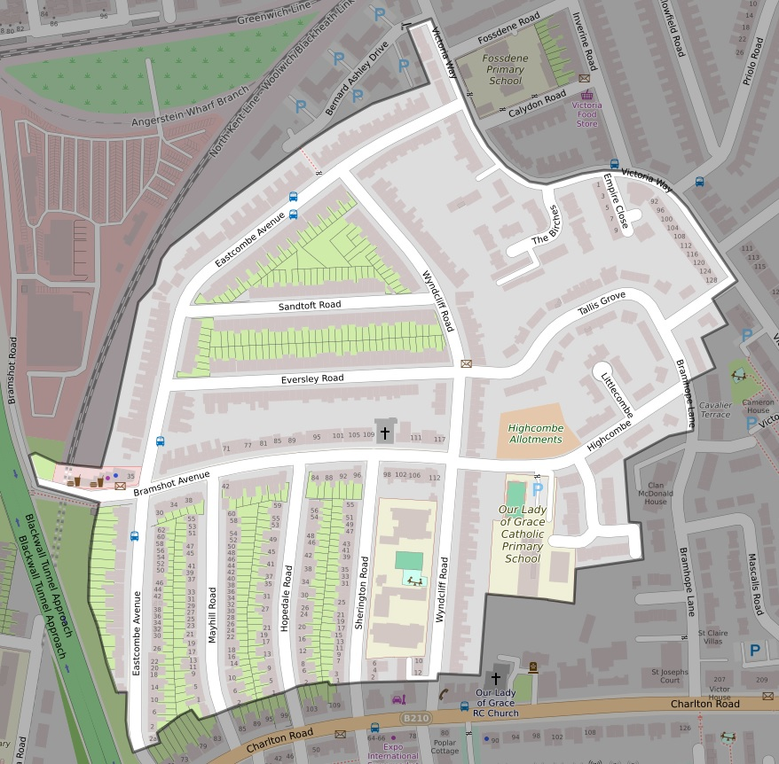

Area covered

Map data © OpenStreetMap contributors
| Previous page | Home |
Streets covered - details
If your property is not shown here, refer to Local Resources for other residents associations. You are still welcome to join us!
| Name | Coverage | Postcodes |
|---|---|---|
| Eastcombe Avenue | All | 7JD, 7LL, 7LH, 7LJ, 7LQ, 7JE, 7LN, 7LW, 7LG |
| Bramshot Avenue | All | 7HY, 7HX, 7JF, 7JN |
| Eversley Road | All | 7LE, 7LD |
| Hopedale Road | All | 7JH, 7JJ |
| Mayhill Road | All | 7JG, 7JQ |
| Sherington Road | All | 7JW |
| Sandtoft Road | All | 7LR |
| Wyndcliff Road | All | 7JY, 7LP, 7JX, 7JY |
| Bramhope Lane | Partial - Tallis Grove to Highcombe | 7HW, 7HN |
| Empire Close | All | 7FL |
| Highcombe | All | 7HT, 7HR |
| Lime Kiln Lane | All | 7JA |
| Littlecombe | All | 7HS |
| Tallis Grove | All | 7LB, 7JZ, 7LA |
| The Birches | All | 7PB |
| Victoria Way | West side, from Bernard Ashley Drive to Tallis Grove | 7NQ, 7FN |